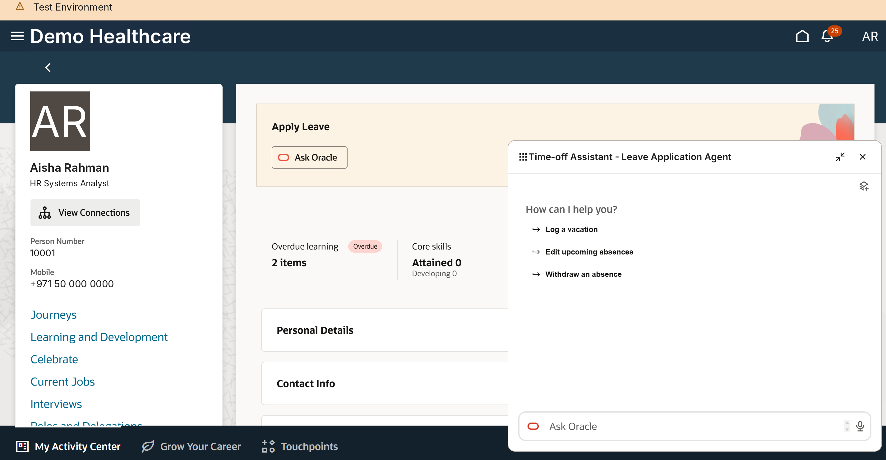
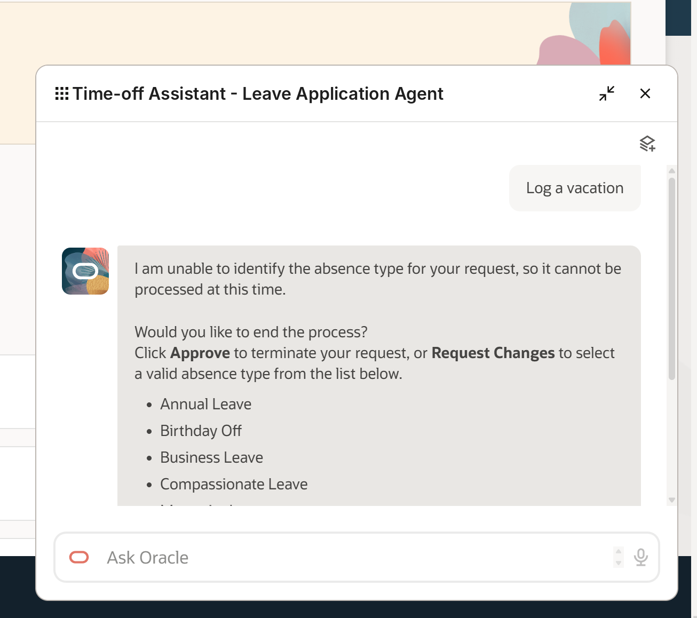
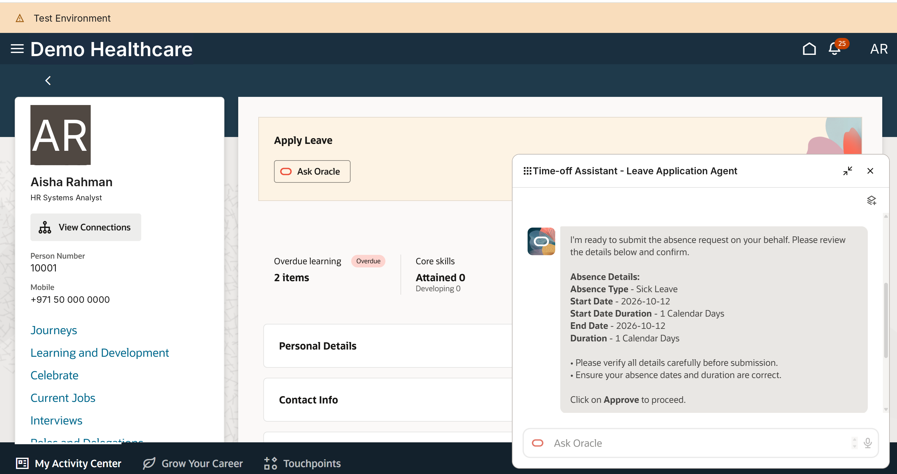
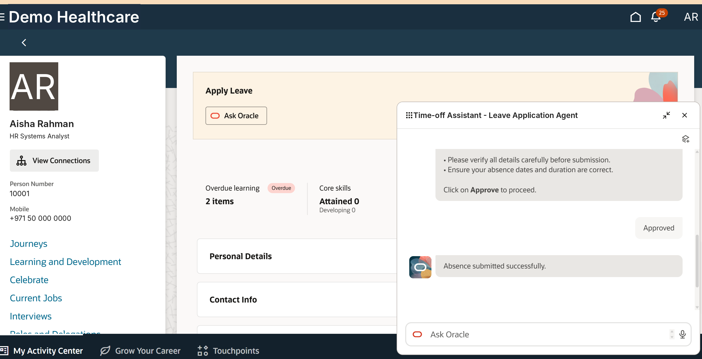
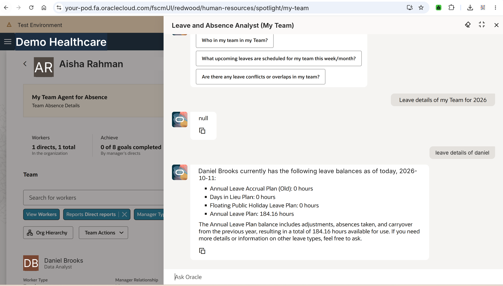
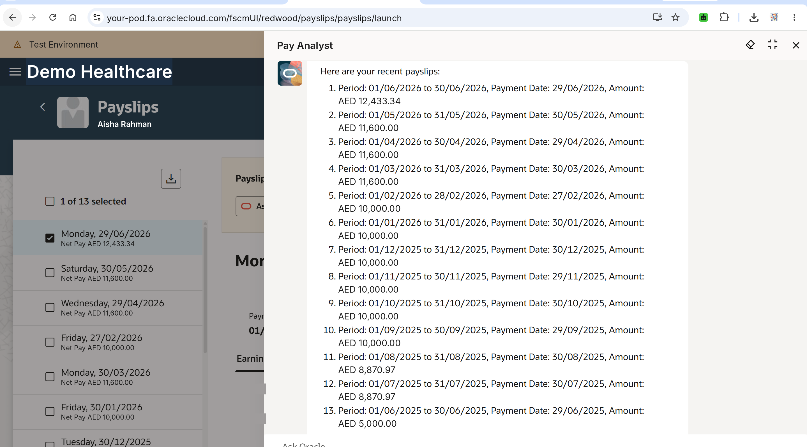
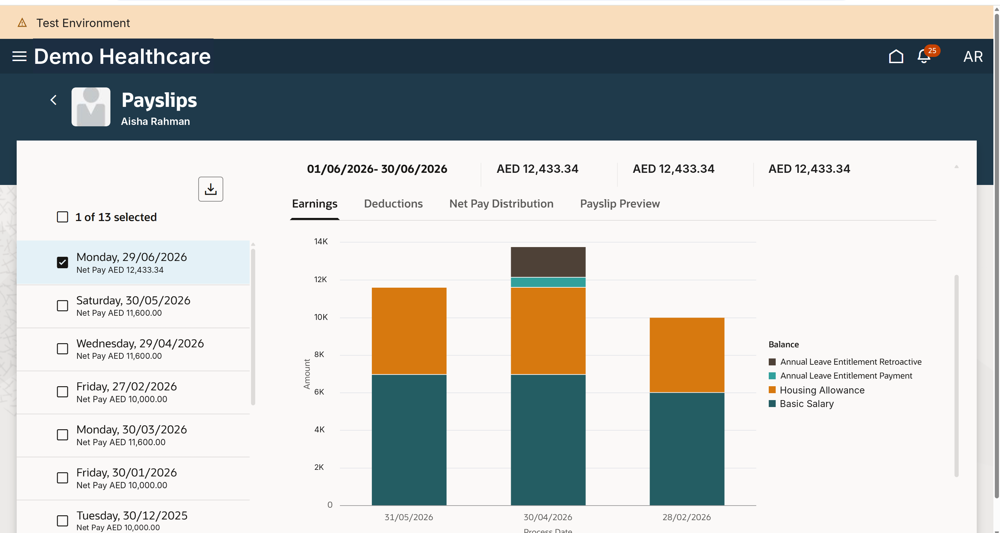
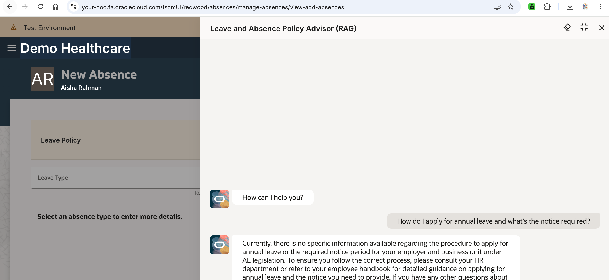

AI agents in Oracle Fusion HCM — what we switched on, and what it took
Employee time-off, manager team absence, payroll self-service, a RAG policy advisor and Redwood payslip analytics — rolled out in-house without a Systems Integrator. This page shows the agents working, the profile options behind them, and the real fixes we needed along the way.
The agents
All are copies of Oracle's delivered AI Agent Studio templates, configured, secured by role and surfaced through “Ask Oracle” on Redwood pages.
Time-off Assistant (leave application agent)
Embedded on the Apply Leave card. The employee states the leave in plain language; the agent resolves the absence type, dates and duration, shows a confirmation card and submits only after the employee clicks Approve.
- Quick actions: log, edit or withdraw an absence
- Human-in-the-loop approval before any transaction
- Validates against the absence types the person is eligible for




Leave and Absence Analyst (My Team)
Launched from the My Team spotlight. Managers ask about a named team member and get current plan balances with an explanation of how the balance is built (adjustments, absences taken, carryover).
Observed limitation
A team-wide question (“leave details of my team for 2026”) returned null, while the same question for a named person worked. Others have reported the hierarchy lookup issue on Customer Connect — ask per person until it's addressed in your release.

Pay Analyst
Opened from the Redwood Payslips page. Answers “show my recent payslips” with period, payment date and net amount for every archived payslip the employee can see — no separate report or download.
- Respects the same payslip data security as the page
- Works only once payslips are generated with a valid template (see fix 6)

Redwood payslip analytics
Not an agent, but the companion piece: the Redwood Payslips page charts earnings by element across periods, so an employee can see at a glance why one month differs — here a leave-entitlement payment and retro element in one period.

Leave and Absence Policy Advisor
A retrieval-augmented agent on the New Absence page meant to answer policy questions (“what notice do I need for annual leave?”) from the organisation's own leave policy.
Lesson learned
In our first test it answered that no specific information was available for the employer and legislation, then pointed the user to HR. A RAG agent can only answer from documents that are actually attached and indexed for it — the agent was live before the policy content was. The honest fallback is the right behaviour; the fix is content, not prompts.

Redwood profile options we enabled
Setup and Maintenance → Manage Administrator Profile Values → search the code → Profile Level Site → Value Y → Save and Close.
| Area | Profile option code | Purpose / note |
|---|---|---|
| Global | ORA_HCM_VBCS_PWA_ENABLED | Master switch for HCM Redwood pages. Site level only — the value can't be set per user. Pilot individual pages with page-level options at User level instead. |
| Core HCM | ORA_PER_PERSONAL_INFORMATION_REDWOOD_ENABLED | Personal Details and Contact Info (on by default from 26C). |
| Core HCM | ORA_PER_EMPLOYMENT_INFO_REDWOOD_ENABLED | Redwood Employment Info page. |
| Absence | ORA_ANC_ADD_ABSENCE_VBCS_UI_ENABLED | Redwood Add Absence page — where the Time-off Assistant and Policy Advisor sit. |
| Absence | HCM_ABSENCES_RESPONSIVE_ENABLED | Confirmed Y at Site while troubleshooting the Submit issue (fix 5). |
| Absence | ORA_ANC_ADMIN_ABSENCE_VBCS_UI_ENABLED | Absences and Entitlements admin page (25B+), for HR. |
| Payroll | ORA_PAY_PAYSLIPS_REDWOOD_ENABLED | Redwood Payslips page (analytics view + Pay Analyst entry point). Not the same as ORA_PAY_PAYSLIP_OUTPUT_REDWOOD_DISABLED, which governs output — easily confused. |
| Payroll | ORA_PAY_DEDUCTION_INFO_REDWOOD_ENABLED | Redwood Deduction card. |
| Payroll | ORA_PAY_PAYROLL_ACTIVITY_REDWOOD_ENABLED | Payroll Activity Center — run the upgrade-results flow before enabling. |
Full, release-specific list: My Oracle Support Doc ID 2922407.1 (HCM Redwood Pages with Profile Options). Codes are added and defaults change every quarter.
The steps we followed
- Search index first. Run the ESS job that creates the index definition and performs the initial ingest to Oracle Search (
fa-hcm-person). Check the document count in Search Administration — silent failures are common, and Redwood person search fails everywhere without it. - Global Redwood switch. Set
ORA_HCM_VBCS_PWA_ENABLED= Y at Site. - Page-level options module by module (table above), Core HCM → Absence → Payroll, testing each in TEST before the next.
- Copy the delivered agent templates in AI Agent Studio (Time Off, Leave and Absence Analyst, My Team, Pay Analyst, Policy Advisor), adjust instructions and publish.
- Grant access by role on each agent's security tab, then run the two security import jobs (fix 2) so the roles appear.
- Surface the agents on Redwood pages through VB Studio (Ask Oracle on Apply Leave, My Team spotlight, Payslips, New Absence).
- Promote TEST → PROD via Manage Extension Lifecycle in TEST VB Studio (fix 8) — there's no VB Studio in PROD, and deployment goes live immediately.
- Regression after each quarterly patch: balances, approvals, payslip generation and every agent prompt.
Real fixes — not just screenshots
Issues we actually hit in this rollout, the root cause, and what resolved them.
1 · Redwood person search returns nothing
Symptom: worker search empty on Absence, Payroll and HR pages after enabling Redwood.
Cause: the fa-hcm-person Oracle Search index was missing or partly ingested.
Fix: re-run the index definition + initial ingest ESS job; verify the document count in Search Administration before re-testing. Re-check after every refresh.
2 · Roles don't appear in the agent's security picker / agent won't respond
Symptom: new or changed roles not selectable; users see the agent but get no answer.
Cause: security changes not imported, and missing channel permission groups.
Fix: run Import Resource Application Security Data, then Import User and Role Application Security Data. Make sure the ChannelManifest and ExternalChatCorrelation permission groups (AllRowsAllFields) are granted — eight of them, and the most frequently missed step.
3 · Leave duration wrong in agent-created absences
Symptom: durations not matching the plan.
Cause: plans accrue in hours (1 working day = 8 hours) while the workflow assumed days.
Fix: hours-based UOM throughout the agent workflow, and the shift times (08:00–17:00) used when building StartDateTime / EndDateTime.
4 · ANC-3405194 — tempBalanceEndDate is null
Symptom: absence entry/balance calculation errors for future dates.
Cause: the payroll calendar wasn't generated far enough ahead.
Fix: extend the payroll calendar (we went to 31/12/2028).
5 · Redwood Add Absence “Submit” does nothing
Symptom: classic UI submits fine; Redwood Submit is silent. A HAR trace showed no POST to the absences REST API at all.
Cause: in VB Studio the page had no action chain bound to the button (ojAction) — inherited Oracle metadata in the extension workspace had gone stale after a quarterly patch.
Fix: delete and recreate the VB Studio workspace so it picks up current runtime dependencies, then re-apply the extension changes. The same pattern later broke the VB Studio canvas after 26A.
6 · Blank Redwood payslips — mainTemplPath is null
Symptom: Generate Payslips completes with alerts, counters show success, PDFs are blank; worked in TEST, failed in PROD.
Cause: the payslip delivery option pointed at a custom template in a BI Publisher catalog folder that didn't exist in PROD.
Fix: download the template from TEST as an archive, create the identical catalog folder path in PROD, upload, and re-run for one employee. Keep only the delivery options you actually use enabled. Note the custom classic RTF and the Redwood sub-template layout are not interchangeable.
7 · “Unable to identify the absence type”
Symptom: the Time-off Assistant rejects “log a vacation”.
Cause: by design the agent maps to configured absence type names; “vacation” isn't one.
What we do: the agent's list of valid types is the guidance — users name the type (“Sick Leave on 12 Oct”). Train users with the real type names, and add the organisation's common synonyms in the agent instructions.
8 · Promoting the extension to PROD with a release mismatch
Symptom: publish blocked while TEST was on 26B and PROD on 26A.
Cause: dependency version constraints in extension.json required the newer release.
Fix: temporarily lower the constraints (e.g. >=25.0.0), publish through Manage Extension Lifecycle, then restore them in TEST. Also: VB Studio code here needs ES5 var, and console.log is blocked.
Community and documentation we referred to
- Oracle Help Center — Set profile options for Redwood pages
- My Oracle Support — HCM Redwood Pages with Profile Options (Doc ID 2922407.1) (login required)
- 25C What's New — Leave and Absence Analyst AI agent
- 25C What's New — Leave and Absence Analyst (My Team) AI agent
- Redwood enabled by default for Global HR pages in 26C
- Oracle Cloud Customer Connect — AI for Fusion Applications community (threads on My Team agent hierarchy data, Time Off agent errors, Pay Analyst data)